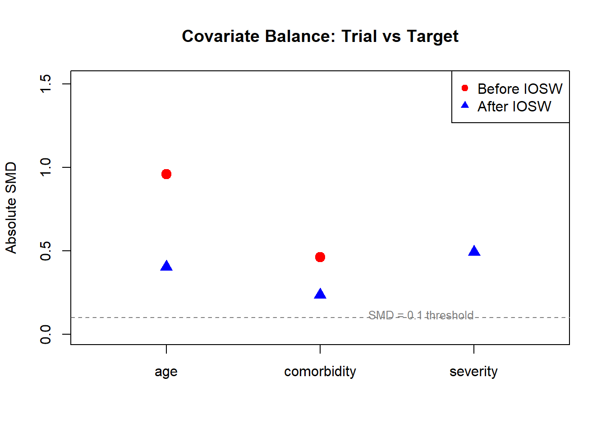

# Pseudocode for transportability TMLE
# Step 1: Combine trial and target population data
combined <- rbind(trial_data, target_data)
combined$S <- c(rep(1, nrow(trial_data)), rep(0, nrow(target_data)))
# Step 2: Estimate P(S=1 | W) - study membership propensity
ps_model <- SuperLearner(Y = combined$S,
X = combined[, covariates],
SL.library = c("SL.glm", "SL.ranger"))
combined$ps_study <- ps_model$SL.predict
# Step 3: Estimate E(Y | A, W) in trial only
outcome_model <- SuperLearner(Y = trial_data$Y,
X = trial_data[, c("A", covariates)],
SL.library = c("SL.glm", "SL.ranger"))
# Step 4: Predict counterfactuals for target population
target_data$Qbar1 <- predict(outcome_model,
newdata = transform(target_data, A = 1))$pred
target_data$Qbar0 <- predict(outcome_model,
newdata = transform(target_data, A = 0))$pred
# Step 5: PATE estimate (before targeting step)
PATE_initial <- mean(target_data$Qbar1 - target_data$Qbar0)
# Step 6: Apply TMLE targeting/fluctuation for efficiency and double robustness
# (Full implementation requires the efficient influence function for the PATE)23 Transportability and Generalizability in RCT-RWD Synthesis
Learning Objectives
After completing this chapter, you will be able to:
- Distinguish between the sample average treatment effect (SATE), population average treatment effect (PATE), and site-specific effects
- Explain why naive generalization of trial results to external populations fails under effect modification and covariate shift
- State and assess the assumptions required for transportability: S-exchangeability, S-positivity, and consistency
- Implement IOSW and doubly robust transportability estimators
- Diagnose covariate shift between trial and target populations using propensity-for-study-membership models
- Connect transportability methods to the external-data augmentation approaches in Chapter 3.6
23.1 Clarifying the Targets: SATE vs PATE vs Site-Specific Effects
When a randomized trial produces an effect estimate, it is natural to ask: “Does this result apply to my patients?” The answer depends on which causal estimand we are targeting.
Sample Average Treatment Effect (SATE): The average treatment effect among individuals enrolled in the trial: \[\text{SATE} = E[Y^{a=1} - Y^{a=0} \mid S = 1]\] where \(S = 1\) indicates trial membership. This is what the trial directly estimates through randomization.
Population Average Treatment Effect (PATE): The average treatment effect in a target population that may differ from the trial sample: \[\text{PATE} = E[Y^{a=1} - Y^{a=0}]\] This is what clinicians and policymakers usually want—the expected effect if the treatment were deployed broadly.
Site-specific or subgroup effects: Treatment effects within particular subpopulations (e.g., a specific hospital, age group, or region). These are relevant when treatment effects are heterogeneous and local decision-making is needed.
The gap between SATE and PATE can be substantial. Trials often enroll younger, healthier, and more adherent patients than the broader population. If the treatment effect varies with these characteristics (effect modification), the SATE may be a poor guide for population-level decisions.
23.2 Why Naive Generalization Fails
Three mechanisms cause SATE and PATE to diverge:
23.2.1 Selection Into Trials
Trial participants are not randomly sampled from the target population. Enrollment criteria, willingness to participate, and geographic access all create selection. If the factors driving selection also modify the treatment effect, the trial estimate does not transport.
23.2.2 Effect Modification Across Populations
When the treatment effect varies with baseline covariates \(W\) (e.g., age, comorbidity burden, disease severity), and the distribution of \(W\) differs between trial and target populations, the average effect will differ even if the conditional effects \(E[Y^{a=1} - Y^{a=0} \mid W = w]\) are identical.
23.2.3 Covariate Shift
Even when the conditional treatment effect (given covariates) is the same across populations, differences in the marginal distribution of covariates produce different marginal effects. This is a reweighting problem, and it is the problem that transportability methods solve.
The Transportability Assumption
The key assumption underlying all transportability methods is that conditional on measured covariates, the treatment effect is the same across populations. This is untestable but becomes more plausible as richer covariate sets are available. It is closely related to the “no unmeasured effect modification” assumption.
23.3 Assumptions for Transportability
Formally, transporting a causal effect from a trial (\(S = 1\)) to a target population requires three assumptions:
23.3.1 S-Exchangeability (Conditional Independence)
\[Y^a \perp\!\!\!\perp S \mid W \quad \text{for } a \in \{0, 1\}\]
Conditional on measured covariates \(W\), the potential outcomes are independent of study membership. In other words, trial participants and target population members with the same covariate profile have the same expected outcomes under each treatment.
This is the transportability assumption. It is violated when unmeasured factors that differ between populations also modify the treatment effect.
23.3.2 S-Positivity
\[P(S = 1 \mid W = w) > 0 \quad \text{for all } w \text{ with } P(W = w) > 0\]
Every covariate profile present in the target population must have some representation in the trial. If the target population includes patient types that were entirely excluded from the trial, transportability is impossible for those patients.
23.3.3 Consistency
\[Y = Y^a \text{ when } A = a\]
The standard consistency assumption: the observed outcome under treatment \(a\) equals the potential outcome under \(a\). This requires that the treatment is implemented the same way in the trial and target population (same drug, dose, protocol).
23.4 Methods for Transportability
23.4.1 IOSW: Inverse Odds of Sampling Weights
The simplest approach reweights the trial data to match the target population’s covariate distribution. The inverse odds of sampling weight for individual \(i\) in the trial is:
\[w_i = \frac{P(S = 0 \mid W_i)}{P(S = 1 \mid W_i)} = \frac{1 - P(S = 1 \mid W_i)}{P(S = 1 \mid W_i)}\]
where \(P(S = 1 \mid W)\) is the propensity for study membership, estimated from a combined dataset of trial participants and target population members.
The PATE is then estimated as:
\[\widehat{\text{PATE}} = \frac{\sum_{i: S_i=1, A_i=1} w_i Y_i}{\sum_{i: S_i=1, A_i=1} w_i} - \frac{\sum_{i: S_i=1, A_i=0} w_i Y_i}{\sum_{i: S_i=1, A_i=0} w_i}\]
IOSW Limitations
IOSW depends entirely on correct specification of the study membership model. If this model is wrong, the transported estimate is biased. Additionally, extreme weights (when the trial population is very different from the target) inflate variance and can produce unstable estimates.
23.4.2 Outcome Modeling with Transport
An alternative is to fit an outcome model in the trial data (where randomization ensures unconfounded estimation) and then standardize (g-compute) over the covariate distribution of the target population:
\[\widehat{\text{PATE}} = \frac{1}{n_{\text{target}}} \sum_{i: S_i=0} \left[\hat{E}(Y \mid A=1, W_i) - \hat{E}(Y \mid A=0, W_i)\right]\]
This approach is consistent if the outcome model is correctly specified but does not require correct modeling of study membership.
23.4.3 Doubly Robust Approaches: TMLE for Transportability
A TMLE for transportability combines the IOSW and outcome modeling approaches, providing consistency if either the study membership model or the outcome model is correctly specified.
The procedure:
- Estimate the study membership model: \(\hat{P}(S = 1 \mid W)\) using logistic regression or Super Learner
- Estimate the outcome model: \(\hat{E}(Y \mid A, W, S = 1)\) using data from the trial
- Target the PATE: Apply the TMLE fluctuation step using the efficient influence function for the PATE, which incorporates both the outcome model predictions and the IOSW weights
- Compute the transported estimate: Average the targeted predictions over the target population
23.4.4 Connection to RCT-RWD Hybrid Designs
The transportability framework connects directly to the hybrid designs discussed in Chapter 3.6. In that chapter, external real-world data is used to augment trial evidence. Transportability methods formalize when and how this augmentation is valid:
- External controls: Target population outcome data under control is available from RWD; the trial provides the treatment arm. IOSW reweights trial participants to match the RWD population.
- RCT as anchor: The trial provides internally valid estimates; RWD provides the target population covariate distribution for generalization.
23.5 Diagnostics for Covariate Shift
Before transporting trial results, you must assess how different the trial and target populations are.
23.5.1 Propensity for Study Membership
Fit a model for \(P(S = 1 \mid W)\) and examine the distribution:
set.seed(2026)
# Simulate trial and target populations
n_trial <- 300
n_target <- 1000
# Trial enrolls younger, healthier patients
trial_age <- rnorm(n_trial, mean = 55, sd = 8)
trial_comorbidity <- rbinom(n_trial, 1, 0.15)
trial_severity <- rnorm(n_trial, mean = 2, sd = 0.8)
# Target population is older, sicker
target_age <- rnorm(n_target, mean = 65, sd = 12)
target_comorbidity <- rbinom(n_target, 1, 0.40)
target_severity <- rnorm(n_target, mean = 3.5, sd = 1.2)
# Combine
combined <- data.frame(
age = c(trial_age, target_age),
comorbidity = c(trial_comorbidity, target_comorbidity),
severity = c(trial_severity, target_severity),
S = c(rep(1, n_trial), rep(0, n_target))
)
# Fit study membership model
ps_model <- glm(S ~ age + comorbidity + severity,
data = combined, family = binomial)
combined$ps <- predict(ps_model, type = "response")
# Plot
par(mfrow = c(1, 2))
# Propensity score distribution
hist(combined$ps[combined$S == 1], breaks = 30, col = rgb(0.2, 0.4, 0.8, 0.5),
main = "P(S=1 | W)", xlab = "Propensity for trial membership",
xlim = c(0, 1), freq = FALSE)
hist(combined$ps[combined$S == 0], breaks = 30, col = rgb(0.8, 0.2, 0.2, 0.3),
add = TRUE, freq = FALSE)
legend("topright", c("Trial (S=1)", "Target (S=0)"),
fill = c(rgb(0.2, 0.4, 0.8, 0.5), rgb(0.8, 0.2, 0.2, 0.3)))
# IOSW weights
trial_idx <- combined$S == 1
iosw <- (1 - combined$ps[trial_idx]) / combined$ps[trial_idx]
iosw_stabilized <- iosw / mean(iosw)
hist(iosw_stabilized, breaks = 30, col = "steelblue",
main = "Stabilized IOSW weights", xlab = "Weight")
abline(v = 1, lty = 2, col = "red")
par(mfrow = c(1, 1))
cat(sprintf("Effective sample size: %.0f / %d (%.0f%%)\n",
sum(iosw_stabilized)^2 / sum(iosw_stabilized^2),
n_trial,
100 * (sum(iosw_stabilized)^2 / sum(iosw_stabilized^2)) / n_trial))Effective sample size: 41 / 300 (14%)
23.5.2 Standardized Mean Differences
Compare covariate distributions before and after reweighting:
# Compute standardized mean differences
compute_smd <- function(x_trial, x_target, weights = NULL) {
if (is.null(weights)) {
mean_diff <- mean(x_trial) - mean(x_target)
} else {
mean_diff <- weighted.mean(x_trial, weights) - mean(x_target)
}
pooled_sd <- sqrt((var(x_trial) + var(x_target)) / 2)
return(mean_diff / pooled_sd)
}
covars <- c("age", "comorbidity", "severity")
smd_before <- sapply(covars, function(v)
compute_smd(combined[[v]][trial_idx], combined[[v]][!trial_idx]))
smd_after <- sapply(covars, function(v)
compute_smd(combined[[v]][trial_idx], combined[[v]][!trial_idx],
weights = iosw_stabilized))
smd_df <- data.frame(
covariate = rep(covars, 2),
smd = c(smd_before, smd_after),
status = rep(c("Before IOSW", "After IOSW"), each = length(covars))
)
# Dot plot
plot(1:length(covars), abs(smd_before), pch = 19, col = "red", cex = 1.5,
xlim = c(0.5, length(covars) + 0.5), ylim = c(0, max(abs(smd_before)) * 1.1),
xlab = "", ylab = "Absolute SMD", main = "Covariate Balance: Trial vs Target",
xaxt = "n")
points(1:length(covars), abs(smd_after), pch = 17, col = "blue", cex = 1.5)
axis(1, at = 1:length(covars), labels = covars)
abline(h = 0.1, lty = 2, col = "gray50")
text(length(covars), 0.12, "SMD = 0.1 threshold", col = "gray50", cex = 0.8, adj = 1)
legend("topright", c("Before IOSW", "After IOSW"),
pch = c(19, 17), col = c("red", "blue"))
23.6 Worked Example: SATE vs PATE Divergence
We demonstrate how effect modification produces divergence between the trial-specific effect and the population effect.
set.seed(2026)
# --- Data generation with effect modification ---
n_trial <- 300
n_target <- 1000
# Trial population (younger)
W_trial <- rnorm(n_trial, mean = 55, sd = 8)
A_trial <- rbinom(n_trial, 1, 0.5) # randomized
# Target population (older)
W_target <- rnorm(n_target, mean = 65, sd = 12)
# Treatment effect INCREASES with age (effect modification)
# Y = 10 + 0.1*age + A * (0.5 + 0.05 * (age - 50)) + noise
# At age 55: effect = 0.5 + 0.05*5 = 0.75
# At age 65: effect = 0.5 + 0.05*15 = 1.25
tau <- function(age) 0.5 + 0.05 * (age - 50)
Y_trial <- 10 + 0.1 * W_trial + A_trial * tau(W_trial) + rnorm(n_trial, 0, 1)
# SATE: treatment effect estimated in trial
sate_est <- mean(Y_trial[A_trial == 1]) - mean(Y_trial[A_trial == 0])
# True SATE (analytical)
true_sate <- mean(tau(W_trial))
# True PATE (analytical)
true_pate <- mean(tau(W_target))
# IOSW-transported estimate
combined_w <- c(W_trial, W_target)
combined_s <- c(rep(1, n_trial), rep(0, n_target))
ps_fit <- glm(combined_s ~ combined_w, family = binomial)
ps_hat <- predict(ps_fit, type = "response")
ps_trial <- ps_hat[1:n_trial]
iosw <- (1 - ps_trial) / ps_trial
iosw_stab <- iosw / mean(iosw)
pate_iosw <- weighted.mean(Y_trial[A_trial == 1], iosw_stab[A_trial == 1]) -
weighted.mean(Y_trial[A_trial == 0], iosw_stab[A_trial == 0])
cat("=== SATE vs PATE with Effect Modification ===\n")=== SATE vs PATE with Effect Modification ===cat(sprintf("True SATE (trial population): %.3f\n", true_sate))True SATE (trial population): 0.767cat(sprintf("Estimated SATE (naive): %.3f\n", sate_est))Estimated SATE (naive): 0.983cat(sprintf("True PATE (target population): %.3f\n", true_pate))True PATE (target population): 1.245cat(sprintf("Estimated PATE (IOSW): %.3f\n", pate_iosw))Estimated PATE (IOSW): 1.097cat(sprintf("\nDivergence (PATE - SATE): %.3f\n", true_pate - true_sate))
Divergence (PATE - SATE): 0.478cat("\nThe target population is older, and the treatment effect\n")
The target population is older, and the treatment effectcat("increases with age, so PATE > SATE.\n")increases with age, so PATE > SATE.
Interpreting the Divergence
In this example, the treatment effect increases with age. Because the target population is older than the trial population, the PATE exceeds the SATE. A clinician treating the target population who relied on the trial’s SATE would underestimate the treatment benefit. The IOSW-transported estimate corrects for this by upweighting older trial participants.
23.7 Connection to ES-CV-TMLE and A-TMLE
The transportability framework connects to the adaptive methods discussed in the context of RCT-RWD hybrid designs. Specifically:
ES-CV-TMLE (Experiment-Selector Cross-Validated TMLE) uses cross-validation to select the optimal combination of trial and external data for estimating the PATE, automatically downweighting external data that introduces bias.
A-TMLE (Adaptive TMLE) adapts to the degree of similarity between trial and external populations, achieving efficiency gains when populations are similar while protecting against bias when they are not.
Both methods can be viewed as adaptive transportability estimators: they solve the transportability problem while being robust to violations of the transportability assumption. See Chapter 3.6 for details.
23.8 Check Your Understanding
Questions
SATE vs PATE: A trial of a blood pressure medication enrolls patients aged 40-65 with no diabetes. The effect estimate is a 5 mmHg reduction. The target population includes patients aged 40-85, 30% of whom have diabetes. Under what conditions does the trial SATE equal the PATE? Under what conditions might they diverge?
S-positivity: You are transporting results from a trial that excluded patients with eGFR < 30 mL/min. Your target population includes such patients (15% of the population). Can you estimate the PATE using transportability methods? What could you do instead?
Diagnostics: After computing IOSW weights to transport a trial result to your target population, you find that the effective sample size is 18 (from a trial of 400 patients). What does this mean, and what are your options?
Answers
SATE equals PATE if there is no effect modification by age or diabetes status—that is, if the treatment works equally well regardless of age and diabetes. They will diverge if older patients or patients with diabetes respond differently to the medication. For example, if the drug is less effective in patients with impaired kidney function (which correlates with both age and diabetes), the PATE could be attenuated relative to the SATE.
S-positivity is violated: the trial has zero probability of enrolling patients with eGFR < 30, so there are no trial data to reweight for this subgroup. You cannot estimate the PATE for the full target population. Options: (a) Restrict the PATE to the subpopulation with eGFR >= 30 and report this limitation. (b) Use external data (RWD) for the eGFR < 30 subgroup, but this requires strong assumptions about the treatment effect in this group. (c) Conduct a sensitivity analysis exploring plausible treatment effects in the excluded subgroup.
An ESS of 18 from 400 trial participants means extreme covariate shift: the trial population is very different from the target, and a few trial participants are receiving enormous weights. This makes the transported estimate highly variable and unreliable. Options: (a) Examine which covariates drive the divergence and consider whether all are necessary for transportability. (b) Trim extreme weights and report as a sensitivity analysis. (c) Collect additional trial data from centers that are more representative of the target population. (d) Use a doubly robust method (TMLE) which may be more stable than pure IOSW.
23.9 Sources and Further Reading
- Hernán and Robins (2016) — Target trial emulation framework
- Petersen and Laan (2014) — Causal roadmap for integrating causal modeling and statistical estimation
- Dang, Tager, and Petersen (2023) — Causal roadmap for generating high-quality real-world evidence
- Laan and Rose (2011) — Targeted learning foundations
- U.S. Food and Drug Administration (2023) — FDA guidance on externally controlled trials
- U.S. Food and Drug Administration (2018) — FDA Real-World Evidence framework
Dang, Lauren E, Issa Tager, and Maya L Petersen. 2023. “A Causal Roadmap for Generating High-Quality Real-World Evidence.” Journal of Clinical and Translational Science 7 (1): e127.
Hernán, Miguel A, and James M Robins. 2016. “Using Big Data to Emulate a Target Trial When a Randomized Trial Is Not Available.” American Journal of Epidemiology 183 (8): 758–64.
Laan, Mark J van der, and Sherri Rose. 2011. “Targeted Learning: Causal Inference for Observational and Experimental Data.” Springer.
Petersen, Maya L, and Mark J van der Laan. 2014. “Causal Models and Learning from Data: Integrating Causal Modeling and Statistical Estimation.” Epidemiology 25 (3): 418–26.
U.S. Food and Drug Administration. 2018. “Framework for FDA’s Real-World Evidence Program.” https://www.fda.gov/media/120060/download.
———. 2023. “Considerations for the Design and Conduct of Externally Controlled Trials for Drug and Biological Products.”